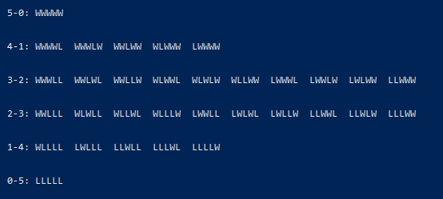
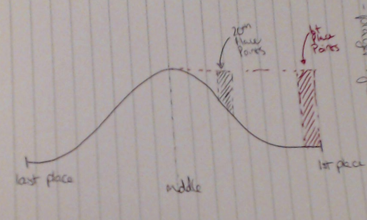

TL;DR - Warhammer results fit a bell-curve better than a straight line, so we include that in our rankings calculations.
Thanks for the TL;DR just show me the ladder
To explain the new rankings system, we'll start by explaining the previous rankings system. The previous rankings system worked by saying:
"Winning an event of 60 players is worth 100 points, and each position down from first is worth 1/60th of those 100 points."
What this meant is there was an equal gain in terms of rankings points for each position you went up on the ladder at an event. However, this is not how Warhammer really works.
As many people will have experienced, if you are at a 200 person event going from top 10 to top 3 is much more difficult than going from top 80 to top 73. The
reason for this is that there are many many different ways to finish in the mid-tables of an event, but only one way to win it - winning all your games. Here is a diagram of possible Win/Loss (WL) combinations at a 5 game event:

We can see that there is a bell-curve shape going on here. What this means is you should receive more rankings points for getting into the 4-1 or 5-0 category, than for moving around in the 3-2 category.
The new rankings system does exactly this, it calculates the score for each ladder position on a bell-curve, rather than a straight line like the previous system. This has three nice effects:
1) If you regularly go 5-0 or 4-1, as mentioned, your efforts to get to the top of the ladder at an event are more well rewarded.
2) If you regularly go 3-2 or 2-3, you won't lose as many rankings points due to tiebreakers.
E.g. if you finished 80th instead of 70th at a 200 person event, you will still get your (statistically) fair share of rankings points.
3) We no longer need to arbitrarily distinguish between event sizes! The system will automatically handle different event sizes. Statistically, winning a 40 person event is more difficult than
finishing 30th at a 200 person event. The current system will correctly recognise this difficulty, while also recognising that coming first at a 200 person event is harder than coming first at a 30 person event.
This diagram (better picture soon I promise) illustrates how points are awarded. The further along the curve you are, the bigger a slice of points you get
(the diagram shows the slices for 1st place and 20th place, at around a 50 person event). If you are below the halfway point, your slice will count against you.
We normalize the numbers so that finishing last is still roughly zero points, and finishing first is still roughly one hundred. But in the initial calculation you can think of it going from -50 up to 50.
